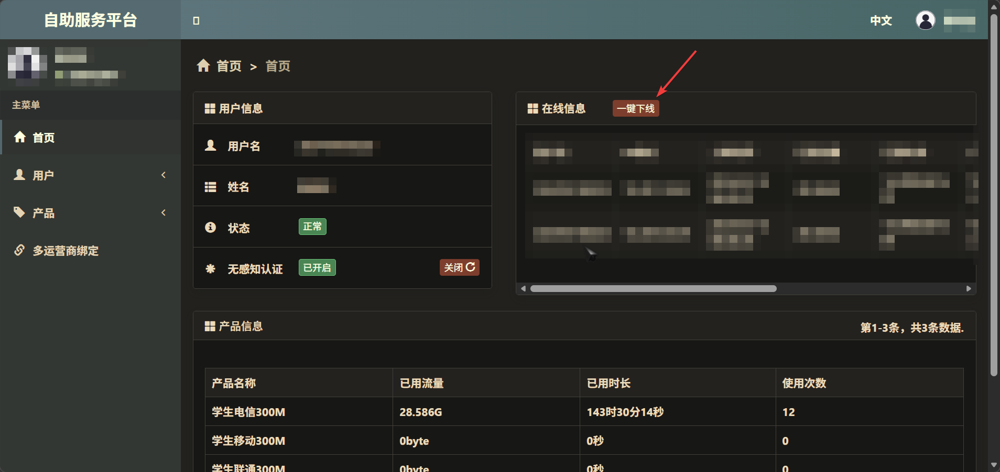

正常登录
首先连接ZAFU校园网。如果自行准备路由器，请确保路由器连接在通网的网口上，连接上路由器的WLAN，如有问题可以在智慧浙农林进行网络报修询问情况
访问校园网登录链接。确保正确填写账号和密码，并选择正确的服务商。
如果一切正常将连接校园网
自助服务
在认证成功后会出现自助服务链接，或者可以在校园网内直接访问链接
可以自助下线设备、配置MAC Auth等
常见问题
无法访问
请确保正确连接校园网
无法认证
请检查校园卡是否欠费
认证后无法正常上网
如果有设备可以访问校园网，访问自助服务，手动下线所有设备后再试

其他问题
可以在智慧浙农林进行网络报修询问情况，或者前往电脑医院值班室询问